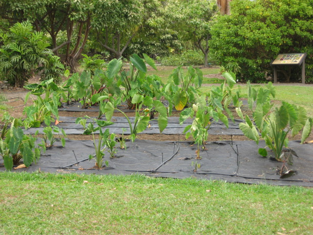

Amy B.H. Greenwell Ethnobotanical Garden
12-acre garden of native and Polynesian introduced plants. Visitors can imagine the landscape in the time before Captain Cook, and learn about the productive, sustainable agriculture the Hawaiians were practicing in Kona 300 years ago. The tour is free, although donations are encouraged. Amy Greenwell Garden is in Kona on Hawai‘i Island.
82-6188 Māmalahoa Highway
Captain Cook, HI 96704
For more information, call 808-323-3318 or email .(JavaScript must be enabled to view this email address).
Amy B.H. Greenwell Ethnobotanical Garden website
Amy B.H. Greenwell Ethnobotanical Garden